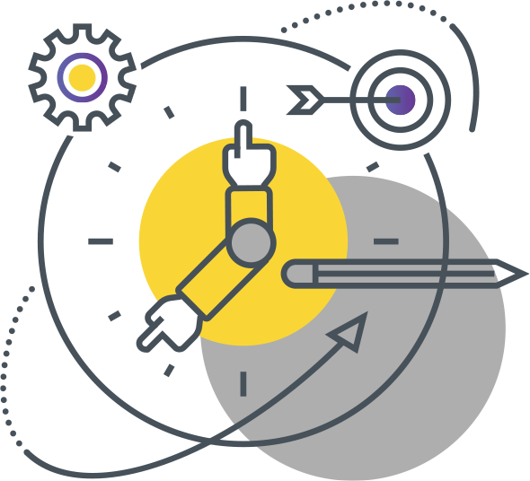

1/3
Как, по вашему мнению, корректно определять длительность конкректной операции:
Далеко-далеко за словесными горами в стране, гласных и согласных живут рыбные тексты.
Далеко-далеко за словесными горами в стране, гласных и согласных живут рыбные тексты.
